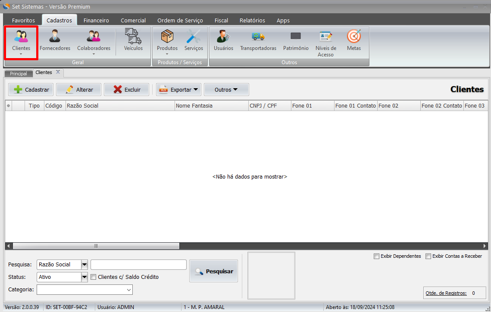
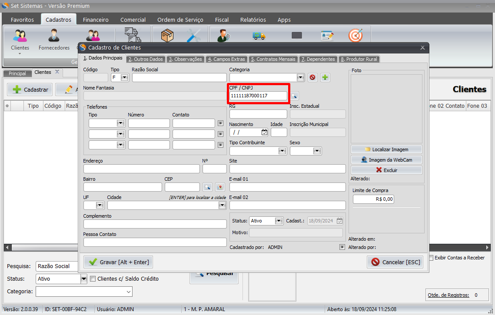
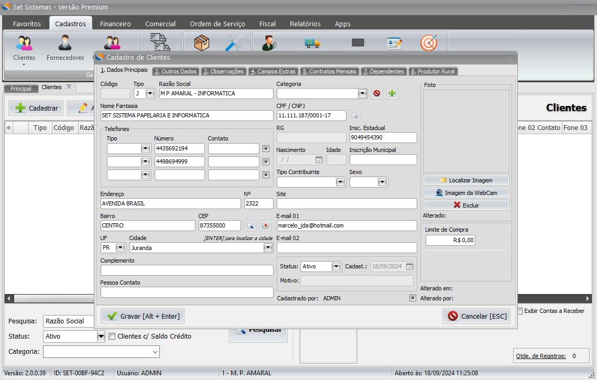

Introdução
Para cadastrar um cliente dentro do Set Sistermas(Retaguarda) é necessário acessar a opção de cadastros.

Clicando na opção cadastros, clique na opção clientes.
Na opção cliente será aberto uma aba com as opções de cadastrar, alterar ou excluir os clientes.

Ao clicar em Cadastrar, uma nova janela escrito Cadastro de Clientesserá aberta. Nessa janela é onde será possível insirir os dados dos clientes para cadastra-lo no sistema.

Para cadastrar um cliente por CNPJ é necessário informar o CNPJ no campo CPF/CNPJ e clicar na lupa.
Após clicar na lupa, os dados do CNPJ que serão preenchidos automaticamente serão: Razão, Nome Fantasia, Número, Inscrição Estadual, E-mail, Endereço, N°, Bairro, CEP, UF e Cidade
Feito isso, clique em gravar, ou aperte a tecla[Alt+Enter], finalizando o cadastro do cliente.
Pessoa Física
O cadastro para pessoa física funciona de uma forma similar, porém na hora de informar o CPF ele não preenche automaticamente o restante dos dados, nesse caso é necessário inserir os dados de forma manual:Razão, Nome Fantasia, Número, Inscrição Estadual, E-mail, Endereço, N°, Bairro, CEP, UF e Cidade.
* O CEP também preenche a UF e a Cidade sozinho desde que estejam corretos.